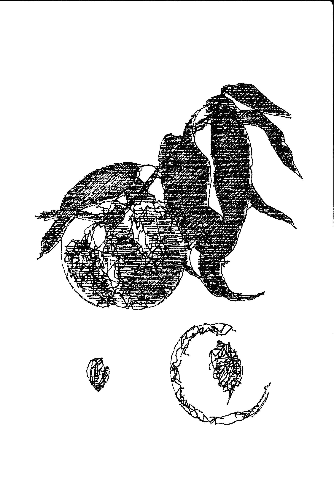
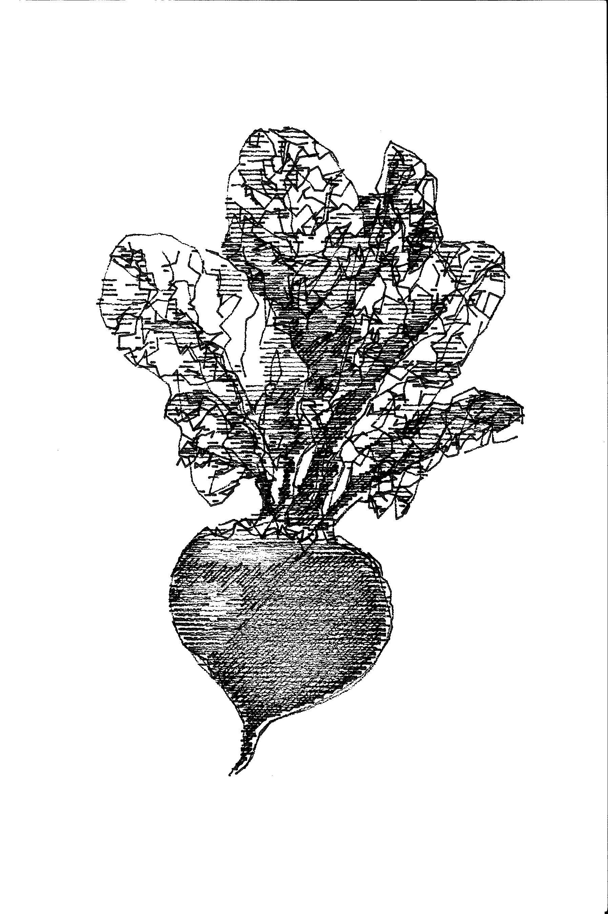
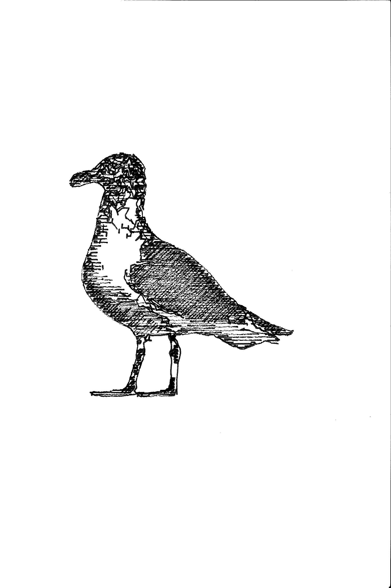

Made some postcards for my friends I'm going to see for TG.
I first search for images of fruits, vegetables, and animals that I think they like. Then I used this tool made by mitxela to stylize the images for single-colored plotting. The underlying algorithm of this style is made by the legendary Lingdong.
  